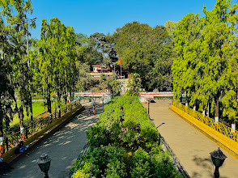
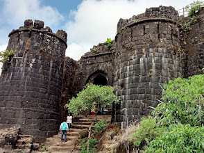

|
 |

|
|---|---|---|
श्रीमंत दगडूशेठ हलवाईश्रीमंत दगडूशेठ हलवाई हे पुण्यातील एक प्रसिद्ध मिठाईवाले व्यापारी होते, ज्यांच्या नावाने आज पुणे आणि जगभरात गणपती मंदिर प्रसिद्ध आहे. त्यांच्या मुलाच्या निधनानंतर त्यांनी गणपतीची मूर्ती स्थापन केली आणि १९९३ मध्ये या मंडळाची स्थापना झाली. ही मूर्ती शंकरअप्पा शिल्पी यांनी घडवली आहे. . |
सारस बागसारस बाग हे पुण्यातील एक ऐतिहासिक आणि प्रसिद्ध पर्यटन स्थळ आहे, ज्याची स्थापना १७५० मध्ये श्रीमंत नानासाहेब पेशवे यांनी केली होती. या २५ एकर परिसरात असलेले गणपतीचे मंदिर, जे तळ्यात असूनही तळ्याच्या मध्यभागी असलेल्या बेटावर आहे, ते 'तळ्यातला गणपती' या नावाने प्रसिद्ध आहे. १७८४ मध्ये श्रीमंत सवाई माधवराव पेशवे यांनी हे मंदिर बांधले होते, ज्याला सिद्धिविनायक गणपती असेही म्हणतात. |
शनिवार वाडाशनिवारवाडा हा पुण्यातील एक ऐतिहासिक किल्ला आहे, ज्याचे बांधकाम पेशव्यांनी केले होते. याची पायाभरणी १० जानेवारी १७३० रोजी झाली आणि २२ जानेवारी १७३२ रोजी त्याची वास्तुशांत झाली. शनिवारवाड्याचे नाव 'शनिवार' या दिवशी वास्तुशांत झाल्यामुळे पडले. हा किल्ला १७३२ नंतर अनेकदा बांधणी आणि बदलांमधून गेला, ज्यामध्ये बुरुजांच्या दरवाजाचे काम १७६० मध्ये पूर्ण झाले |

|
 |

|
|---|---|---|
शिवनेरी किल्लाशिवनेरी किल्ला हा पुणे जिल्ह्यातील जुन्नर शहराजवळ असलेला एक ऐतिहासिक किल्ला आहे. हा किल्ला मराठा साम्राज्याचे संस्थापक छत्रपती शिवाजी महाराज यांचे जन्मस्थान असल्यामुळे त्याला अनन्यसाधारण महत्त्व आहे. हा एक त्रिकोणी आकाराचा किल्ला असून, यात सात सुसज्ज दरवाजे आहेत आणि तो तिन्ही बाजूंनी उंच कड्यांनी वेढलेला आहे. किल्ल्यावर जाण्यासाठी पायथ्यापासून सुमारे ४००-५०० पायऱ्या चढाव्या लागतात आणि यासाठी साधारणपणे ४५ मिनिटे ते एक तास लागू शकतो |
सिंहगड किल्लासिंहगड किल्ला पुण्याजवळ असलेला एक प्रसिद्ध किल्ला आहे, जो सुमारे \(2000\) वर्षांपूर्वी बांधला गेला असावा. १६७० मध्ये झालेल्या सिंहगडाच्या लढाईत तानाजी मालुसरे यांनी प्राण गमावले आणि त्यांच्या स्मरणार्थ शिवाजी महाराजांनी कोंढाणा किल्ल्याचे नाव सिंहगड असे ठेवले. हा किल्ला इतिहास, निसर्ग आणि ट्रेकिंगसाठी लोकप्रिय आहे आणि पुण्यातून दिसणाऱ्या दऱ्या-खोऱ्यांच्या विहंगम दृश्यासाठी ओळखला जातो |
स्वामीनारायण मंदिरस्वामीनारायण मंदिर हे एका मोठ्या हिंदू संप्रदायाचे मंदिर आहे, जे बोचासनवासी अक्षर पुरुषोत्तम स्वामीनारायण संस्था (BAPS) द्वारे बांधले गेले आहे. ही संस्था स्वामीनारायण संप्रदायाचा एक भाग आहे. स्वामीनारायण मंदिर पुणे शहराच्या बाहेर नर्हे-आंबेगाव रोडवर आहे |
thank you for coming |